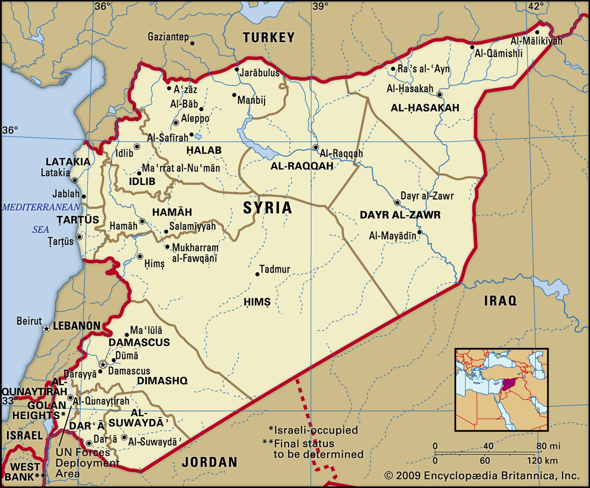
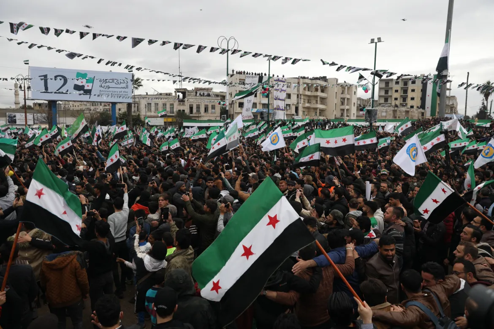

Grupo 2: Primavera Árabe e a Guerra Civil da Síria
Clique em um tópico para ver o conteúdo.
Onde acontece o conflito?

Localização geográfica: a Síria fica no continente asiático, na região do Oriente Médio (também chamada de Sudoeste Asiático), perto do Mar Mediterrâneo. Sua posição é estratégica, entre a Ásia e a Europa. A capital é Damasco, uma das cidades mais antigas do mundo.
Fronteiras
- Norte: Turquia
- Leste: Iraque
- Sul: Jordânia
- Sudoeste: Israel
- Oeste: Líbano
- Costa: Mar Mediterrâneo, que dá acesso a importantes rotas marítimas e comerciais.
Países envolvidos e suas capitais
- Rússia (Moscou) e Irã (Teerã): apoiaram o governo de Bashar al-Assad.
- Turquia (Ancara) e Estados Unidos (Washington): apoiaram forças opositoras ou combateram grupos extremistas.
- Israel (Jerusalém): realizou operações militares na região.
- Outros envolvidos: Arábia Saudita (Riade), Catar (Doha), Líbano (Beirute) e Iraque (Bagdá).
Recursos naturais
- Petróleo e gás natural: de grande importância econômica e estratégica, principalmente no leste e no nordeste do país.
- Minerais: fosfato, calcário e sal.
- Água e terras férteis: o rio Eufrates e as terras usadas na agricultura.
Importância estratégica: o acesso ao Mediterrâneo, as reservas de petróleo e gás e a proximidade com Israel, Turquia e Iraque despertam o interesse de várias potências. Por isso, o território sírio se tornou central nas disputas políticas, econômicas e militares da região.
Como surgiu o conflito?

A guerra civil na Síria começou em 2011, durante a Primavera Árabe, uma onda de protestos populares em vários países do Oriente Médio e do norte da África.
Da revolta à guerra civil
- Protestos: a população foi às ruas contra o governo de Bashar al-Assad, exigindo reformas políticas e mais liberdade.
- Repressão: as manifestações foram reprimidas com violência, o que aumentou a revolta popular.
- Luta armada: parte da oposição passou a pegar em armas contra o governo, e os protestos se transformaram em guerra civil.
Como a guerra se tornou internacional?
- Rússia e Irã: apoiaram o governo de Assad com assistência militar e política.
- Estados Unidos e países ocidentais: apoiaram setores da oposição e, depois, lideraram ações militares contra o Estado Islâmico.
- Turquia: interveio militarmente por segurança de suas fronteiras e para combater grupos curdos que considera ameaças.
- Países árabes e outras potências regionais: apoiaram diferentes lados, de acordo com seus interesses.
- Estado Islâmico: aproveitou o enfraquecimento do Estado sírio para conquistar territórios, o que provocou novas intervenções.
Linha do tempo
- 2011: protestos e repressão.
- 2013–2014: fragmentação da oposição e crescimento do Estado Islâmico.
- 2014: os EUA passam a liderar operações contra o Estado Islâmico.
- 2015: a Rússia intervém militarmente para sustentar Assad.
- 8 de dezembro de 2024: ofensiva rebelde chega a Damasco e Assad foge para a Rússia.
Assim, a guerra deixou de ser apenas uma disputa interna pelo poder e passou a envolver interesses geopolíticos, rivalidades regionais, terrorismo e intervenções estrangeiras.
Quem participa da guerra?

A guerra começou em 2011 como uma crise interna, mas passou a envolver governos, grupos armados, organizações internacionais e potências estrangeiras, o que a transformou em um conflito internacional.
Governos envolvidos
- Síria (Bashar al-Assad): lutava para permanecer no poder contra quem queria derrubá-lo. O governo caiu em dezembro de 2024, e Assad recebeu asilo na Rússia.
- Rússia: apoiou Assad com aviões, soldados e armamentos.
- Irã: apoiou Assad com recursos, armas e auxílio militar.
- Turquia: apoiou a oposição síria e fez operações militares no norte do país.
- Estados Unidos: apoiaram grupos curdos e participaram de operações contra o Estado Islâmico.
- Israel: atacou posições militares iranianas e grupos aliados do Irã na Síria.
Grupos armados
- Exército Livre da Síria (ELS): formado por militares que abandonaram o governo de Assad.
- Estado Islâmico (ISIS): grupo extremista que conquistou territórios na Síria e no Iraque.
- Forças Democráticas Sírias (FDS): lideradas por curdos, apoiadas pelos EUA e focadas em combater o Estado Islâmico.
- Hay'at Tahrir al-Sham (HTS): ganhou força no norte e liderou a ofensiva que derrubou Assad.
- Exército Nacional Sírio (ENS): oposição apoiada pela Turquia, ativa principalmente no norte.
Organizações internacionais
- ONU: tentou promover acordos de paz e proteger os civis.
- ACNUR: ajudou refugiados com proteção e assistência.
- CICV (Cruz Vermelha): prestou atendimento médico, alimentos e apoio humanitário.
- OPAQ: investigou denúncias de uso de armas químicas.
Como isso internacionalizou a guerra? Rússia e Irã apoiaram Assad, enquanto Estados Unidos e Turquia apoiaram diferentes grupos de oposição, enviando armas, dinheiro e soldados. As diferenças entre esses países, principalmente no Conselho de Segurança da ONU, dificultaram os acordos de paz e prolongaram o conflito.
Quais interesses estavam em jogo?

A guerra da Síria virou um conflito internacional porque vários países passaram a defender interesses próprios no território. A disputa não foi só por recursos: também estavam em jogo segurança de fronteiras, controle político e influência regional.
Interesses econômicos e territoriais
- Petróleo e gás: concentrados no leste e nordeste. Quem controla os campos controla a arrecadação e o fornecimento de energia.
- Água: os rios Eufrates e Tigre e suas barragens são essenciais para agricultura, abastecimento e energia.
- Minérios: fosfato, gesso, sal e mármore, importantes para fertilizantes e exportação.
- Rotas e portos: Tartus e Latakia dão acesso ao Mediterrâneo; corredores terrestres ligam a Síria à Turquia, ao Iraque e à Jordânia.
Interesses das potências e dos vizinhos
- Rússia: apoiou Assad a partir de 2015 para manter influência no Oriente Médio e proteger as bases de Hmeimim e Tartus, sua projeção militar no Mediterrâneo.
- Estados Unidos: combateram o Estado Islâmico, apoiaram as Forças Democráticas Sírias (de maioria curda) e pressionaram Assad com sanções.
- Irã: apoiou Assad com ajuda militar e grupos aliados, para preservar sua influência regional.
- Turquia: apoiou opositores e interveio no norte para conter a expansão de forças curdas.
- Israel: atacou alvos militares sírios e ampliou sua presença perto do Golan, território disputado desde 1967.
Atenção: petróleo, gás, água e rotas comerciais aumentaram a importância estratégica da Síria, mas não são a causa única da guerra. A repressão política, a luta pelo poder e as divisões internas também foram fatores fundamentais.
Quais foram os impactos da guerra?

A guerra civil síria causou perdas humanas enormes, deslocamentos em massa, pobreza, destruição de serviços públicos e danos ambientais. Mesmo após a queda de Assad, em 2024, a reconstrução continua sendo um grande desafio.
Impactos humanos
- Mortos: centenas de milhares de vidas perdidas, entre civis, crianças, combatentes e profissionais de saúde. O PNUD calculou cerca de 618 mil mortes relacionadas ao conflito até 2025. O número exato é difícil de determinar, porque muitas mortes não foram registradas.
- Feridos: amputações, queimaduras, fraturas e lesões por explosões, além de traumas psicológicos, ansiedade e depressão. Hospitais foram destruídos ou ficaram sem medicamentos e profissionais.
- Refugiados: milhões de sírios fugiram do país, principalmente para Turquia, Líbano, Jordânia, Iraque e Egito, onde enfrentaram pobreza, falta de moradia e trabalho, barreiras de idioma e dificuldade de acesso a escola e saúde.
- Deslocados internos: pessoas que deixaram suas casas, mas continuam na Síria. Muitas vivem em campos, tendas ou construções improvisadas, sem água potável, saneamento, eletricidade e segurança. Em 2026, ainda eram cerca de 5,5 milhões.
Impactos econômicos
- Perda de empregos: empresas, fábricas e comércios fecharam.
- Pobreza: em 2025, cerca de 90% da população vivia na pobreza (PNUD).
- Inflação: os preços subiram e a moeda síria perdeu valor.
- Infraestrutura: estradas, hospitais, escolas, redes elétricas e sistemas de água foram danificados.
- Perdas no PIB: cerca de US$ 800 bilhões ao longo de 14 anos de conflito (PNUD).
Impactos sociais
- Educação: escolas destruídas ou fechadas. Entre 40% e 50% das crianças de 6 a 15 anos estavam fora da escola (PNUD).
- Saúde: faltaram médicos, medicamentos e equipamentos.
- Famílias separadas e saúde mental: muitas pessoas perderam parentes e sofreram com a violência.
- Desigualdade: crianças, mulheres, idosos e pessoas com deficiência foram os mais atingidos.
- Patrimônio cultural: monumentos, sítios arqueológicos e construções antigas foram danificados.
Impactos ambientais
- Solo e ar: explosões, escombros e incêndios liberam substâncias tóxicas e fumaça.
- Água: ataques a sistemas de saneamento deixaram milhões sem abastecimento adequado (Baker Institute).
- Agricultura: abandono de terras, falta de irrigação e secas aumentam a insegurança alimentar.
- Resíduos de guerra: minas e munições não detonadas continuam ameaçando pessoas e plantações.
Conclusão: a guerra se tornou internacional porque vários países intervieram para defender seus interesses. Quem mais pagou o preço foi a população síria, e a recuperação depende de investimentos, estabilidade política e ajuda internacional.